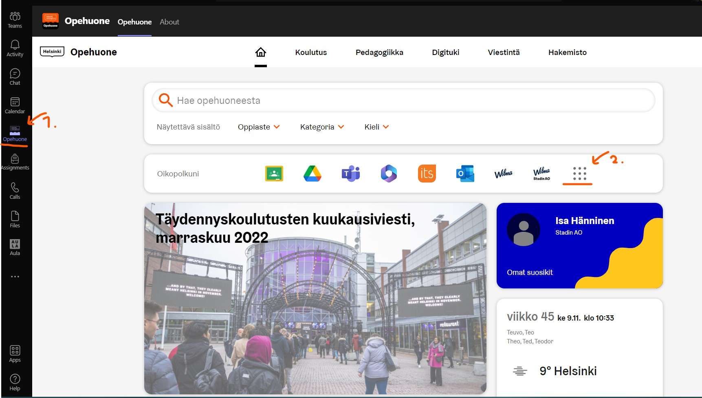
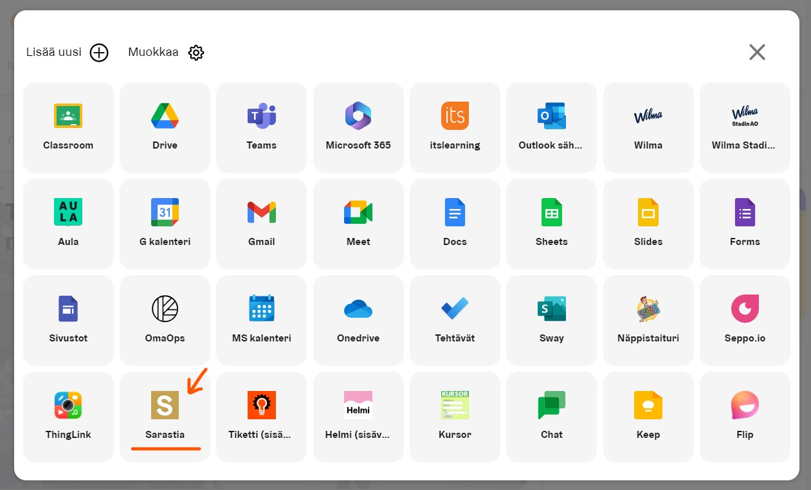
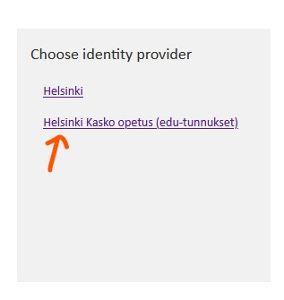
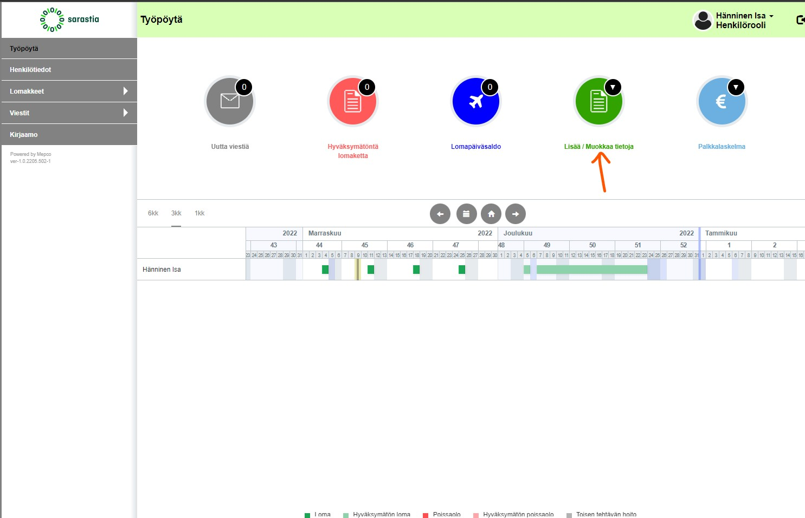
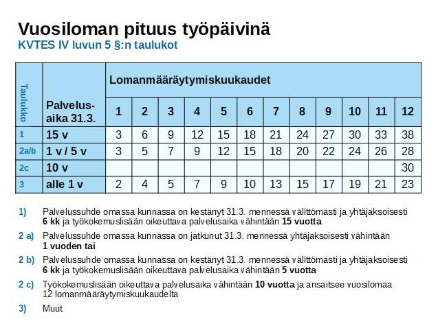

Tälle sivulle on koottu Virittämö Helsingin perehdytysmateriaaleja ja ohjeita
Klikkaa aihetta laajentaaksesi osion
esittely
➤
Virittämö on helsinkiläisten työttömien työllistämispalvelu.
Virittämö toimi 2017 - 2019 hankkeena, johon osallistui yli 100 henkilöä. Osallistujien hyvinvointi kasvoi selvästi ja työllistyminen helpottui hankkeen aikana. Virittämö koostuu neljästä tiimistä: Ohjaustiimi, Media, ICT ja Softa.
Mitä 8kk aikana tehdään?
- Yleistason seuranta ja vastuunjako yhteisessä järjestelmässä
- Ohjataan yksilöllisten tarpeiden pohjalta, arviointikeskustelut tasaisin väliajoin
- Työ- ja toimintakyvyn, työelämätaitojen ja osaamisen kehittäminen
Virittämö on osa Stadin ammatti-ja aikuisopistoa ja kuulumme työllisyydenhoidon tiimiin. Stadin AO on osa kasvatuksen ja koulutuksen (Kasko) toimialaa.
- Johtava rehtori on Maria Sarkkinen
- Kaskon toimialajohtaja on Satu Järvenkallas.
- Kasko kuuluu apulaispormestari Nasima Razmyarin vastuulle.
työsopimus
➤
Työsopimus tehdään kirjallisena sähköisesti esihenkilömme Anna-Mari Rourun kanssa.
Työntekijä ja tiimikoordinaattori käyvät työsopimuksen ehdot läpi siten, ettei niistä jää epäselvyyttä. Allekirjoitettu työsopimus sitoo sekä työntekijää että työnantajaa.
Työsopimuksia tehdään kaksi kappaletta; toinen jää työnantajalle ja toinen työntekijälle.
Työntekijän tehtävä on viedä Sarastiaan mahdolliset aikaisemmat alaan liittyvät työtodistukset, jos haluaa, että kokemuslisä lasketaan ja tarkistetaan.
Lisätietoa työsopimuksesta:
KVTESohjaustiimi
➤
Ohjaustiimin yhteystiedot:
- Anna-Mari Rouru, Koulutuspäällikkö:
- p. 09 310 81417
- anna-mari.rouru@edu.hel.fi
- Tarja Kurvinen, Tiimikoordinaattori:
- p. 09 310 27553
- tarja.kurvinen@hel.fi
- Jaakko Hyytiä, Projektiasiantuntija/kouluttaja:
- p. 09 310 28040
- jaakko.hyytia@edu.hel.fi
- Joonas Pitkonen, Softa tiimivastaava:
- p. 09 310 27555
- joonas.pitkonen@edu.hel.fi
- Ari Tuomi, ICT tiimivastaava:
- p. 09 310 27571
- ari.tuomi@edu.hel.fi
- Kai Rintamaa, Media tiimivastaava:
- p. 09 310 81403
- kai.rintamaa@edu.hel.fi
- John Strandberg, Työelämävalmentaja:
- p. 09 310 37370
- john.strandberg@edu.hel.fi
työvuorot
➤
Työvuorot merkitään työvuorolistaan, joka löytyy Teamsista
Virittämö yhteinen → General → Työvuorosuunnitelma.
Työvuorot merkitään aina kuusi viikkoa eteenpäin eikä niitä voi muuttaa jälkikäteen.
Etäpäivistä on sovittava erikseen tiimivastaavan kanssa
Kirjainkoodien merkitykset:
- c = 7:30 - 15:39
- d = 8:00 - 16:09
- ä = 8:30 - 16:39
- a = 9:00 - 17:09
työskentelytilat
➤
Softan ja ICT:n työskentelytilat ovat Myllypurossa Metropolian kampuksella kolmannessa kerroksessa C-tornissa
Kampuksella työskentelykäyttöömme kuuluvat vain Softan ja ICT:n luokat sekä ohjaustiimin komero.
Taukoa saa mennä pitämään henkilökunnan taukotiloihin, jotka löytyvät samasta kerroksesta. Kerrosta ylempää löytyy kahviautomaatti.
Ensimmäisessä kerroksessa sekä kuudennessa kerroksessa sijaitsee Metkan kahvilat, kuudennessa kerroksessa on lisäksi myös valoisa terassi.
Ensimmäisen kerroksen A-tornissa on Sodexon ruokala, jossa Virittämön työntekijät saavat syödä henkilökunnan hinnalla.
Sodexon ruokalista löytyy täältä.
Mediatiimi työskentelee osittain Arabiassa Muotoilijankadulla ja osittain Myllypurossa
Käyttäjätunnukset ja käyttöoikeudet
➤
Virittämöllä saat käyttöösi edu.hel-tunnukset sekä erillisen hel-tunnuksen helsinki1-koneen käyttöön.
Edu.hel-tunnus on muodossa etunimi.sukunimi@edu.hel.fi sekä lhyessä muodossa, esim. suketu@edu.hel.fi
Saatuasi tunnukset kirjaudu helsinki1-koneelle vaihtamaan salasanasi.
Sarastia
➤
Kirjautuminen:
Teams sivupalkki → Opehuone → Oikopolkuni valikko → Sarastia → Helsinki Kasko opetus
Sarastiaan kirjaudutaan edu.hel-tunnuksilla
  
Lomien hakeminen
Lisää / Muokkaa tietoja → Lomalomakkeet → Lomahakemus
Lomakkeen vastaanottajaksi Anna-Mari Rouru
Poissaoloilmoitus
Lisää / Muokkaa tietoja → Poissaololomakkeet → Poissaoloilmoitus
Lomakkeen vastaanottajaksi Anna-Mari Rouru
Omien tietojen muuttaminen
Lisää / Muokkaa tietoja → Henkilön muutoslomakkeet → Henkilötietojen ilmoitus / muutos

Jos et pääse kirjautumaan Sarastiaan laita Anna-Marille sähköpostia, jossa on liitteenä kuvankaappaus virheilmoituksesta osoitteeseen anna-mari.rouru@edu.hel.fi
Voit myös olla itse yhteydessä Sarastian tukeen
Intro
➤
Ovi
➤
Jotain
➤
Työmatkasetelit
➤
Työsopimus tehdään kirjallisena sähköisesti esihenkilömme Anna-Mari Rourun kanssa.
Työntekijä ja tiimikoordinaattori käyvät työsopimuksen ehdot läpi siten, ettei niistä jää epäselvyyttä. Allekirjoitettu työsopimus sitoo sekä työntekijää että työnantajaa.
Työsopimuksia tehdään kaksi kappaletta; toinen jää työnantajalle ja toinen työntekijälle.
Työntekijän tehtävä on viedä Sarastiaan mahdolliset aikaisemmat alaan liittyvät työtodistukset, jos haluaa, että kokemuslisä lasketaan ja tarkistetaan.
Poissaolot
➤
Sairastuessa poissaolo ilmoitetaan aina puhelimitse esimiehelle ennen työvuoron alkamista.
Sairaspoissaolot pitää myös merkitä Sarastiaan
Lomat
➤
Vuosilomaa kertyy oheisen taulukon mukaan
Lomaa ei voi muuttaa rahaksi vaan se on kaikki käytettävä.
Tiketit ja ICT-tuki
➤
Ict-tiimille voi lähettää tiketin mistä tahansa ohjelmistoon tai laitteistoon liittyvästä ongelmasta.
Tikettipalvelun löydät Teamsista Virittämö Yhteinen → Tech Support → Digitalents ICT Käyttötuki - Portaali
TAI
Virittämö Portaali